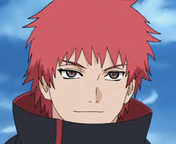
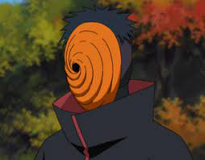
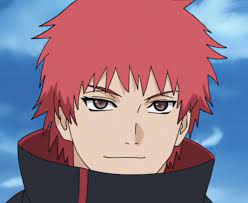
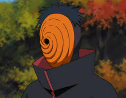

Akatsuki is a group of rouge ninjas. They were some of the best ninjas from their respective villages. The Akatsuki's mission is world peace. They aim to achieve this goal by putting the entire world under an illusion spell. The Akatsuki's signature colors are black and red, whose inspiration is visible on this website.


 


